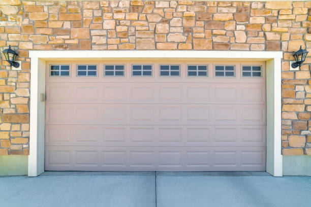
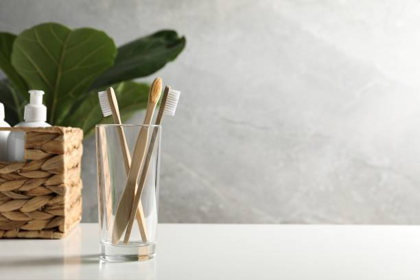
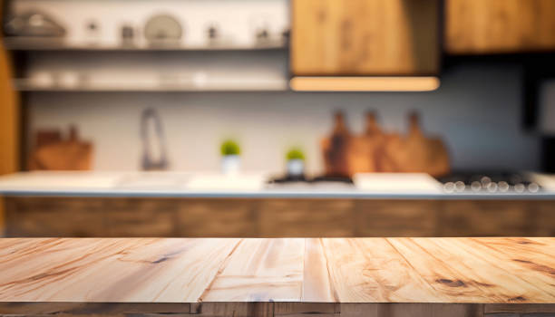
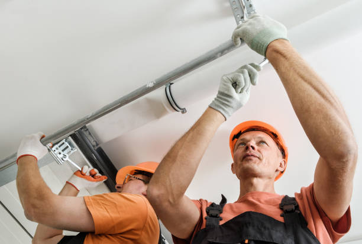
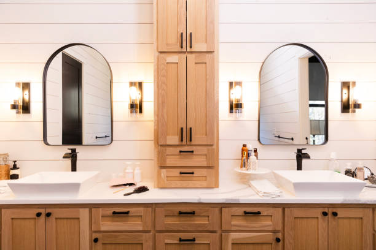
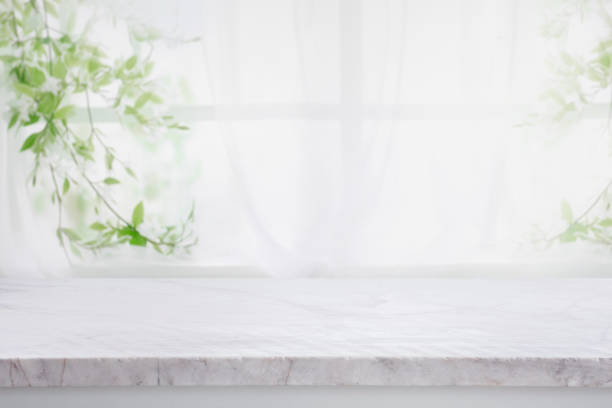
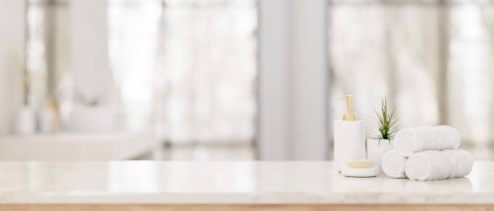
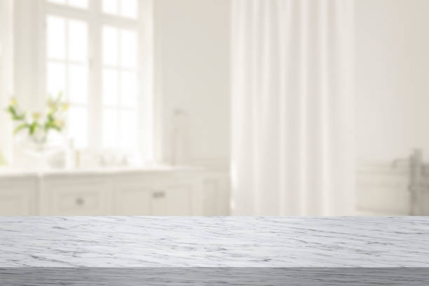
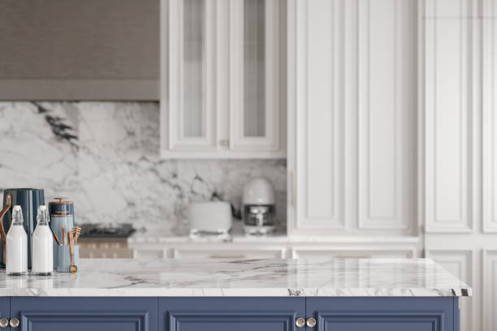

USA - Nationwide
info@ohmykitchen.pro
USA - Nationwide
info@ohmykitchen.pro

Experience seamless beauty with our solid surface countertop installation . Easy to clean and customize, they make a perfect addition to modern homes!
Choose solid surface countertops for a seamless, stylish finish. Our expert team ensures a perfect fit and durability for your kitchen in Usa - Nationwide.
Residential & commercial Countertops
Quality services at affordable prices
Immediate 24/ 7 emergency services

When it comes to kitchen and bathroom renovations, granite countertops are a top choice for homeowners in Usa - Nationwide. Known for their durability, elegance, and timeless appeal, granite offers a unique, natural beauty that enhances any space. As experts in granite countertop installation, we pride ourselves on delivering high-quality craftsmanship and personalized customer service. Our team is experienced in selecting the right slabs, ensuring proper measurements, and performing meticulous installations.
But why choose us? We understand that each customer has unique preferences and needs when it comes to countertops. Our extensive selection of granite colors and patterns guarantees that you’ll find the perfect fit for your home. On top of that, we handle the entire process, from consultation to installation, ensuring a seamless experience. Our commitment to excellence and customer satisfaction sets us apart in the Usa - Nationwide area—let us make your dream kitchen or bathroom a reality with our stunning granite countertops!
If you're looking for a countertop solution that combines beauty with low maintenance, look no further than quartz countertops. Our quartz countertop installation service offers a stunning variety of designs, colors, and finishes that can complement any style of home or commercial space. Quartz is non-porous, making it resistant to stains and bacteria, which is essential in keeping your countertops looking pristine and safe for food preparation.
What sets us apart? We offer not just installation but a comprehensive consultation to help you select the best quartz countertops that fit your needs and budget. Our skilled installers ensure that every piece is carefully measured and installed to perfection. With a focus on quality and precision, we guarantee that your quartz countertops will be a lasting investment in your home or business. Experience the benefits of quartz countertops for a space that looks great and functions even better.

Marble countertops exude luxury and sophistication, making them a timeless choice for upscale kitchens and bathrooms. The natural beauty of marble adds an elegant touch while providing excellent durability and heat resistance. Our marble countertop installation services are tailored to create stunning surfaces that not only enhance aesthetic appeal but also serve every practical need.
We understand that each slab of marble is unique, and that's why we work closely with our clients to ensure that they receive a product that reflects their personality and taste. Our skilled craftsmen handle the installation process with precision, ensuring that the natural veining of the marble is showcased beautifully in your space.
Why choose us? We stand out due to our high-quality craftsmanship and excellent customer support. Our team is well-versed in handling various types of marble and is committed to meticulous attention to detail. Our extensive experience in the Usa - Nationwide area means we know the local styles and trends that resonate with our community, ensuring your new marble countertops integrate harmoniously into your home.

For those who appreciate a warm, rustic feel in their kitchen, butcher block countertops are a perfect choice. Our butcher block countertop installation service combines the beauty of natural wood with practicality. These countertops are not only visually appealing but also durable and easy to maintain, making them an ideal surface for both cooking and entertaining.
Why should you choose us? We take pride in our craftsmanship and the quality of the materials we use. Each butcher block countertop is custom-fabricated to fit your specific kitchen layout and style. Our team is knowledgeable about the maintenance and care of butcher block surfaces, ensuring longevity and satisfaction. We'll work closely with you to design and install a countertop that not only looks great but is functional for your cooking and dining needs. Enhance your kitchen with warmth and elegance from our butcher block countertop installation .

If affordability and versatility are your main considerations, laminate countertops provide an effective solution that doesn’t compromise on style. Laminate is available in a vast array of colors and patterns, making it perfect for various decor styles. Our laminate countertop installation services ensure you receive a high-quality product tailored to your specific needs.
Our installation process is designed to be efficient without sacrificing craftsmanship. We utilize superior quality laminates that are scratch and water-resistant, ensuring longevity. Our skilled professionals will guide you through selecting the right laminate that matches your vision and elevates your space.
You should choose us for your laminate countertop installation because we pride ourselves on delivering exceptional value. Our commitment to customer satisfaction means that we are always ready to address your concerns and make recommendations based on best practices. We strive to ensure that your new countertops enhance your home and provide years of reliable service.

For a truly unique and modern aesthetic, consider our concrete countertop installation service . Concrete countertops are highly customizable, allowing for various colors, textures, and finishes that can adapt to any design style, from industrial chic to minimalist elegance.
Our expert team is skilled in creating handcrafted concrete countertops, ensuring exceptional quality and attention to detail. We work with you to design countertops that not only fit your space but also reflect your individuality. Concrete offers unmatched durability and strength, making it a functional choice for high-traffic areas like kitchens.
In addition to aesthetic appeal, our concrete countertops are resistant to heat and scratches, providing a practical surface for daily use. We are dedicated to using sustainable practices in our installations, ensuring your countertops are eco-friendly. With our concrete countertops, you’ll receive a one-of-a-kind addition to your home that is both beautiful and practical.

For environmentally conscious homeowners, recycled glass countertops offer a unique blend of sustainability and style. With sparkling aesthetics and a commitment to eco-friendliness, these countertops can transform any space into a modern masterpiece. Our recycled glass countertop installation services in Usa - Nationwide are designed to provide a stunning, sustainable solution for your kitchen or bathroom.
Why choose our services? We specialize in high-quality recycled glass products that are both durable and visually appealing. Our team is dedicated to providing professional installation, ensuring that your new countertops are both functional and beautiful. Plus, we can guide you on the best design choices that complement your existing décor while showcasing your commitment to sustainability. Experience the perfect harmony of style and sensitivity to the environment with our stunning recycled glass countertops!

At the heart of any great kitchen or bathroom is a stunning countertop that reflects your personal style. Our custom countertop design and fabrication services in Usa - Nationwide allow homeowners to transform their dream design into reality. Whether you prefer granite, quartz, marble, or any other material, we help craft countertops that are uniquely yours.
Our process begins with a consultation to understand your vision and requirements. Our design specialists work with you to create unique solutions that blend functionality and aesthetics seamlessly. From concept to reality, our skilled fabricators handle every aspect, ensuring attention to detail and a perfect match to your design.
Choosing us for your custom countertop needs means opting for a dedicated partner in your design journey. Our reputation is built on our commitment to craftsmanship and client satisfaction. We utilize state-of-the-art technology and skilled artisans to deliver products that exceed expectations.

If your countertops are worn out or outdated, our countertop replacement services can give your kitchen or bathroom a fresh new look. Whether you're seeking to upgrade to luxury materials or simply want to rejuvenate the existing design, we can help.
Why choose us for your replacement project? We understand that selecting the right countertops can be overwhelming. Our knowledgeable team will guide you through material options, styles, and budget considerations, ensuring a smooth decision-making process. Our skilled installers will handle everything, from removal of the old countertops to precise installation of your new surfaces, all while minimizing disruption to your home. Trust us to refresh and revitalize your space with our expert countertop replacement services!

Elevate your outdoor living space with our outdoor kitchen countertop installation service . The right countertops can transform your outdoor kitchen into a functional and attractive area perfect for entertaining and cooking. We offer a range of durable materials designed to withstand the elements and enhance your outdoor experience.
What makes us the best choice? Our focus on quality and functionality means we offer informed recommendations tailored to outdoor environments. We consider factors such as durability, weather resistance, and maintenance when selecting the right materials for your outdoor countertops. Our team of skilled professionals will ensure your outdoor kitchen countertops are installed with precision, adding beauty and functionality to your patio or garden. Choose us for outdoor kitchen countertop installation and enjoy a stunning outdoor paradise.

The kitchen island is the heart of any modern kitchen, and it deserves the best countertops. Our kitchen island countertop installation service focuses on providing aesthetically pleasing, durable, and functional surfaces. From preparing meals to casual dining, we understand that kitchen islands serve multiple purposes, and so should your countertops.
Our experience and knowledge allow us to help you select the right material that not only complements your kitchen's design but also meets your daily functional requirements. We pride ourselves on our craftsmanship, ensuring that each countertop is installed with care and precision. Our team collaborates with you to create a kitchen island that becomes the focal point of your culinary space. Transform your kitchen with our premium kitchen island countertop installation services .

Elevate the aesthetic and functionality of your bathroom with our expert bathroom countertop installation services . Choosing the right countertop can transform your bathroom into a luxurious retreat. From sleek granite and quartz to elegant marble and practical laminate, we offer a wide variety of materials to suit every style and budget.
Our experienced team understands the unique requirements of bathroom spaces, and we are committed to providing custom solutions that fit seamlessly into your design. We will work closely with you from the initial consultation to installation, ensuring the perfect fit and finish.
Not only do we prioritize aesthetics, but we also focus on durability and ease of maintenance. Bathroom countertops must withstand moisture and regular use, and we can recommend materials that meet these needs while also offering a stunning appearance.
From modern to traditional styles, our bathroom countertops can help create a space that reflects your personal taste. Trust us to deliver high-quality materials and impeccable craftsmanship, making your bathroom both functional and beautiful.
The edge design of your countertops can significantly impact the overall look and feel of your space. Our countertop edge design and customization services provide you with the opportunity to choose from a variety of edge styles that suit your taste.
Why choose us for your edge design? Our skilled team offers a wide range of customization options, from classic straight edges to more elaborate profiles like bullnose or waterfall designs. We understand that the finishing touches matter, and we pay close attention to detail to ensure your countertops look flawless. Whether you prefer a modern aesthetic or a traditional design, we can help you achieve your desired look while maintaining the highest quality. Let us assist you in creating unique and stunning edges that enhance your countertops!

If your existing countertops are showing wear and tear but the base is still functional, countertop resurfacing might be the perfect solution. Our countertop resurfacing services in Usa - Nationwide transform your surfaces, extending their lifespan and improving their appearance without the need for a full replacement.
We utilize specialized techniques and high-quality materials to rejuvenate your countertops, providing a fresh look that can make a significant difference in any room. Our team assesses your existing surfaces and recommends the best resurfacing options to achieve your desired aesthetic.
Choosing us for your countertop resurfacing ensures that you receive a solution that saves you time and money. We pride ourselves on our commitment to quality and customer satisfaction, ensuring that the resurfaced countertops meet your expectations and enhance your home's value.

Accidents happen, but that shouldn’t mean that your countertops are permanently damaged. Our countertop repair and restoration service in Usa - Nationwide specializes in fixing a range of issues, from scratches and cracks to stains and more. We understand how important countertops are to your lifestyle, and our goal is to restore them to their original beauty and functionality.
What makes us different? Our experienced technicians use specialized techniques and high-quality products that guarantee effective restoration results. We assess the damage and devise a customized repair plan tailored to the material of your countertops. Whether you have granite, quartz, or butcher block, we have the expertise to restore their beauty. Trust our countertop repair services to bring your surfaces back to life.

Proper sealing and maintenance are critical in preserving the beauty and longevity of stone countertops. Our sealing and maintenance services are designed to help you protect your investment and keep your countertops looking pristine.
Why choose us for countertop sealing? We use high-quality sealants that enhance the natural beauty of your stone while providing a protective barrier against stains and damage. Our experienced technicians understand the best practices for maintaining various stone types, ensuring that your countertops remain functional and attractive. Moreover, we offer ongoing support and education on proper maintenance techniques, helping you avoid common pitfalls. Trust us to help you maintain your countertops for years of enjoyment!

Elevate your home bar experience with stylish and functional countertops designed for entertaining. Our countertop installation service for home bars focuses on aesthetics and practicality, ensuring your bar is a space where you can host and enjoy gatherings comfortably. From sleek quartz to warm butcher block, we offer materials that complement your home decor while being durable enough for everyday use.
Choosing us means you get a dedicated team that appreciates how important your home bar is to your entertainment space. We help you select the right materials and design options that meet both your style and functionality needs. Our experienced installers ensure that every detail is perfect, resulting in a stunning home bar countertop. Impress your guests and enhance your hosting capabilities with our expert installation services for home bars .

As sustainability becomes increasingly important in home design, our eco-friendly countertop options in Usa - Nationwide cater to environmentally conscious homeowners. We offer a selection of sustainable materials, including recycled glass, bamboo, and reclaimed wood, ensuring that your countertops reflect your values without compromising on style or performance.
Our team is committed to helping you select the best eco-friendly materials that fit your design needs. We believe that you shouldn’t have to sacrifice beauty for sustainability. Our eco-friendly countertops can be customized in various colors and finishes, making them a beautiful addition to any room in your home.
Installation of eco-friendly countertops requires the same level of expertise as traditional materials, and our skilled team is dedicated to ensuring every installation meets the highest standards of quality and craftsmanship.
Choose our eco-friendly countertops and enjoy the peace of mind that comes from making sustainable choices for your home. You'll contribute to a healthier planet while enjoying beautiful, functional surfaces designed for modern living.
.jpg)
Indulge in the elegance of luxury with our premium countertop installation services in Usa - Nationwide. Our luxury countertop materials, including high-end granite, exquisite marble, and premium quartz, are designed for those who seek sophistication and unparalleled quality in their homes.
When you choose our luxury countertop installation, you gain access to the finest materials available on the market. Our team of experts will guide you through selecting the right luxury options that best suit your design vision and functional needs.
We pride ourselves on our meticulous installation process, ensuring that every detail is handled with precision and care. Your satisfaction is our priority, and we dedicate ourselves to delivering breathtaking results that not only meet but exceed your expectations.
Elevate your home with the beauty and sophistication that our luxury countertops provide. Enjoy a space that is a true reflection of your style, where elegance meets functionality effortlessly.

For businesses demanding durability, functionality, and aesthetic appeal, our commercial kitchen countertop installation services in Usa - Nationwide are tailored to meet the highest standards. We recognize that commercial kitchens require surfaces that can withstand heavy use while maintaining a professional appearance.
Our selection of commercial-grade materials includes stainless steel, solid surface, and high-quality stone, offering the resilience needed for high-traffic environments. Our team works collaboratively with you to design and install countertops that maximize workspace while fitting your aesthetic needs.
Whether in restaurants, catering businesses, or food production facilities, our expert installation ensures that your countertops can handle the rigors of daily commercial use. We also offer maintenance support to keep your countertops looking pristine and functioning efficiently.
Investing in our commercial kitchen countertop installation means selecting a partner who understands the unique demands of your industry and is committed to delivering outstanding results that enhance your business operations.

Elevate your retail space with our custom countertop installation services in Usa - Nationwide. Countertops in retail environments not only need to be functional but also need to attract customers and complement your brand's identity. Our team specializes in creating visually appealing and practical countertop solutions tailored to retail settings.
We offer a variety of materials that combine form with function, including laminate, solid surface, and concrete. Each material can be customized in terms of color, texture, and edge design, allowing you to create a unique atmosphere that resonates with your brand.
Our experienced installers ensure that each countertop fits perfectly within your space while adhering to the highest standards of quality and craftsmanship. By focusing on aesthetics and durability, we aim to enhance the overall shopping experience for your customers.
With our retail store countertop solutions, you’re making a valuable investment in your business's presentation and functionality. Trust us to help you create an inviting and stylish retail environment that draws in customers.

In the hospitality industry, the right countertops can significantly impact guest experience. Our hotel and restaurant countertop solutions in Usa - Nationwide focus on providing top-quality installations that combine aesthetics with functionality. We understand the need for durable and attractive surfaces in high-traffic settings, ensuring they meet both design and practical needs.
What sets us apart? We take pride in our ability to customize solutions based on your specific needs, whether you require elegant stone surfaces for a fine dining restaurant or robust laminate for casual settings. Our team of professionals has the experience to deliver outstanding results that enhance your establishment’s ambiance. Transform your hospitality space with our hotel and restaurant countertop solutions in Usa - Nationwide.

In modern offices, the right countertops contribute to both functionality and style. Our office countertop installation services in Usa - Nationwide cater to businesses looking for durable and aesthetically pleasing solutions that support a productive work environment.
Why are we the best choice for office countertops? We specialize in materials that are not only attractive but also resilient, suitable for heavy use in an office setting. Our team works with you to understand your specific needs, providing tailored solutions that fit your brand and office design. We prioritize efficient installation to minimize disruption during your business operations. Let us enhance your office with stylish countertops that promote productivity and professionalism!

In medical and laboratory environments, reliability and cleanliness are of utmost importance. Our countertops for medical and laboratory settings are designed to meet rigorous standards of hygiene while being durable enough to withstand heavy use. We offer a variety of surfaces that are non-porous, easy to clean, and resistant to chemicals and stains.
What makes our service exceptional? We focus on safety and compliance, ensuring our materials align with health standards and regulations. Our knowledgeable team understands the specific requirements of medical and laboratory settings, recommending countertops that maintain a sterile environment. Choose us for your medical and laboratory countertop needs and ensure a safe and efficient workspace for professionals and patients alike.
USA - Nationwide Countertops Pros
(877) 848-1711
info@ohmykitchen.pro
09.00 AM - 09.00 PM
09.00 AM - 12.00 PM